Geen uitdaging te groot.
Van een klein fijn lijntje tot een volledig portret van je trouwe viervoeter. Wat je ook in gedachten hebt, we werken het samen uit tot het past.
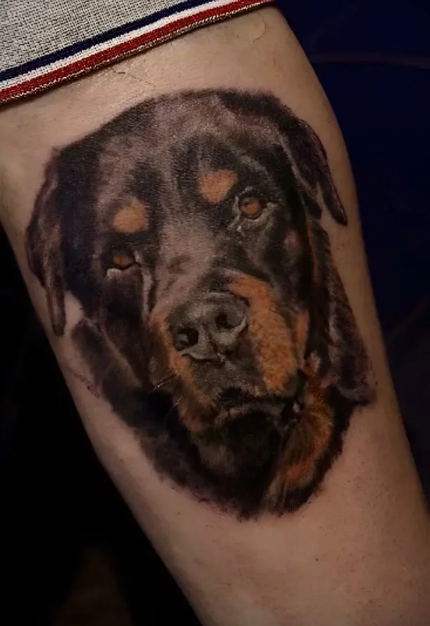
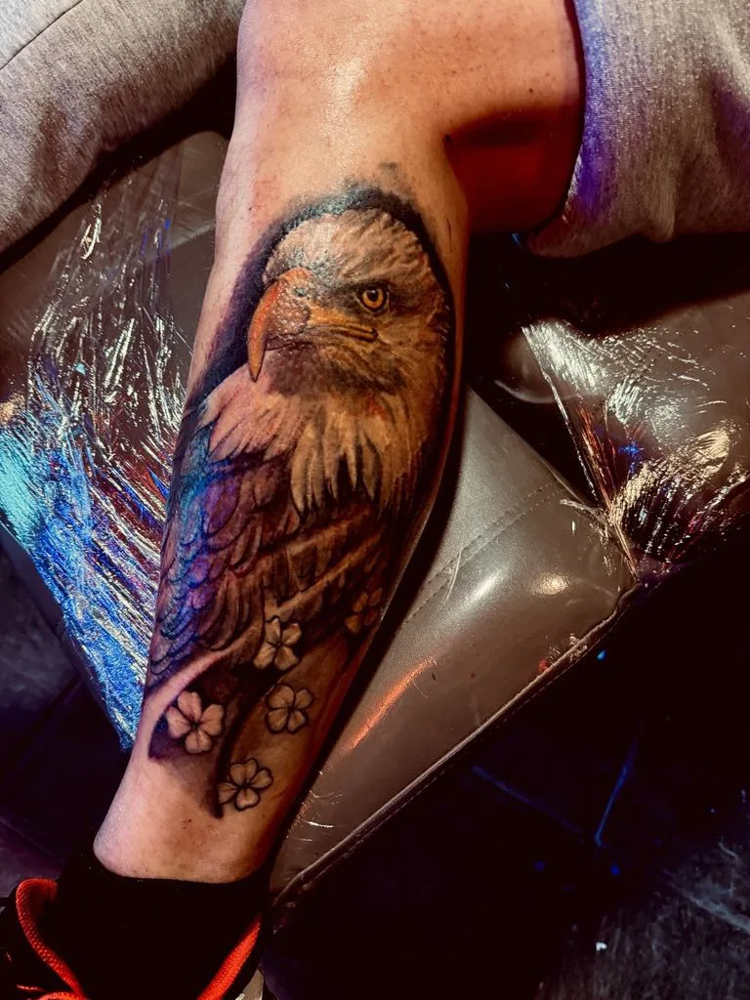
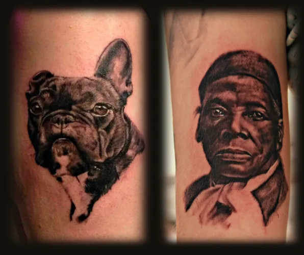
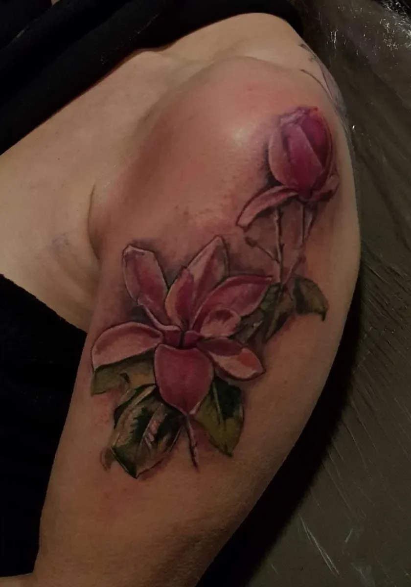
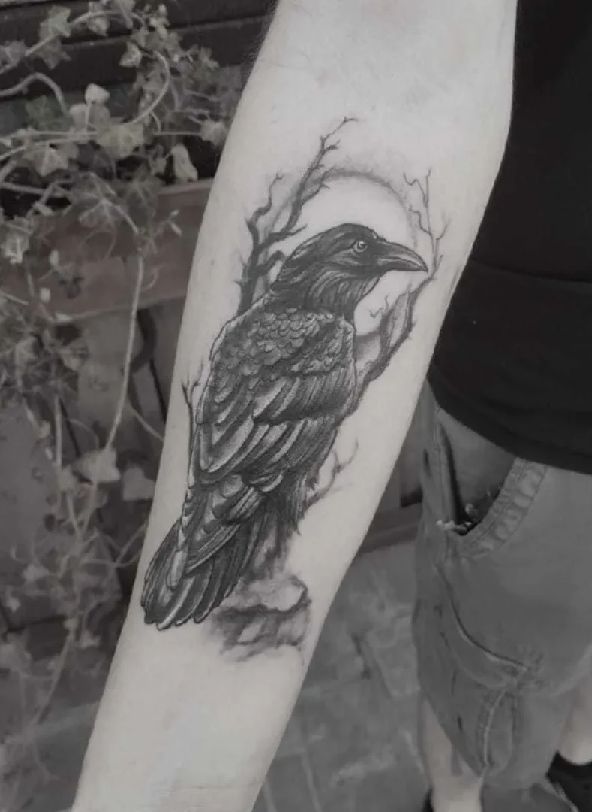
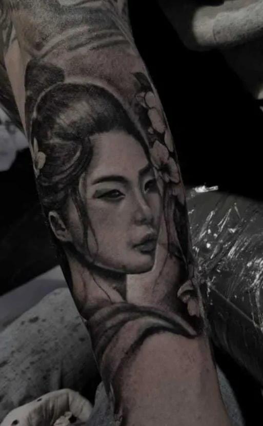
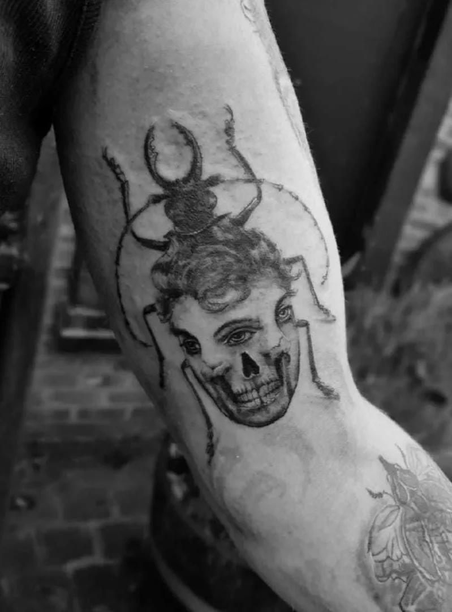
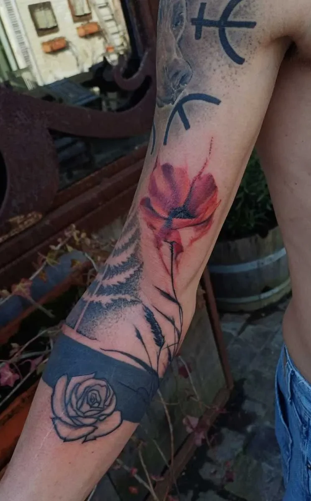
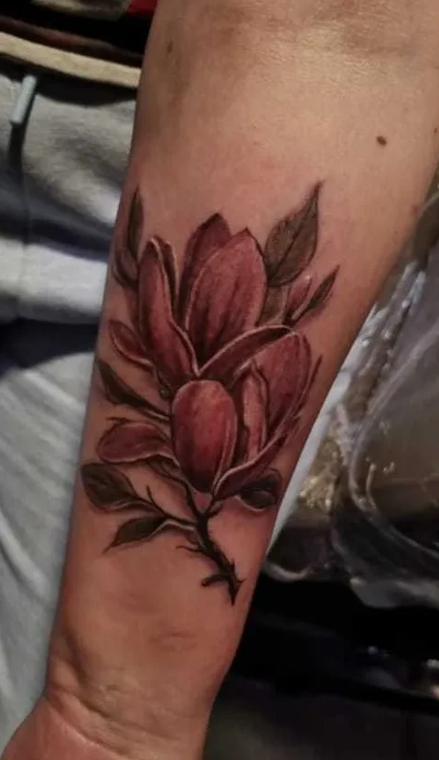
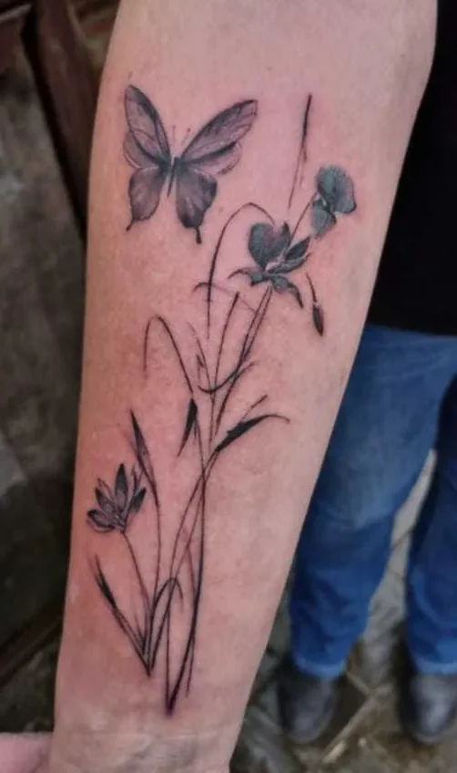
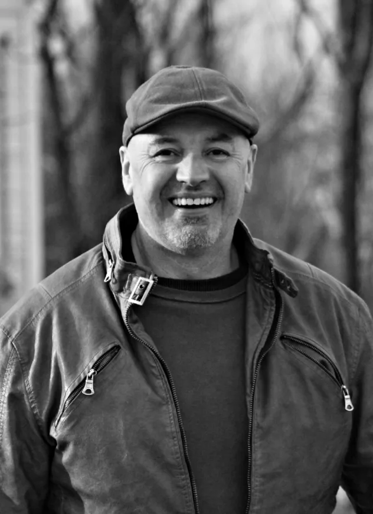
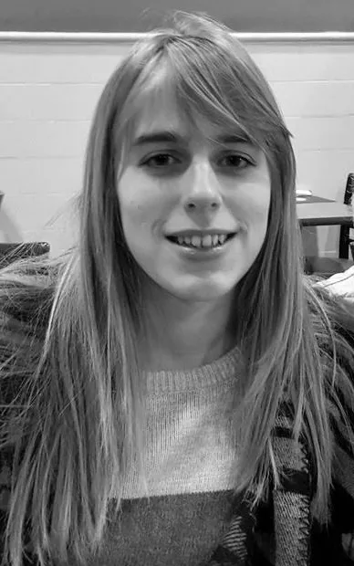
Begonnen in een garagebox.
Gerrit startte in een kleine garage in Nazareth, met tribals. Daaruit groeide Tattoo Le Roy, en uit de tribals groeide alles: realisme, Maori, mandala, portretten en fijn lijnwerk.
Neelke denkt mee over je idee, bij een tas koffie in de shop.
Gerrit
Tekent je idee uit en zet het, van een fijn lijntje tot een volledig portret.
Neelke
Je aanspreekpunt voor piercings, nieuwe juweeltjes en vragen over plaatsing.
Zetten, wisselen, verzorgen.
We plaatsen en vervangen zowat alle soorten piercings. Twijfel je over een juweeltje of de plaats, dan kijken we het samen na.
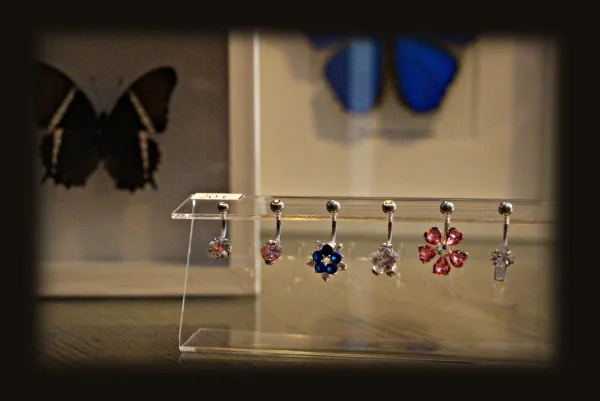
De eerste weken
- Ongeveer twee weken om te genezen.
- Ontsmet met Diaseptyl, voor een tongpiercing met Hextril.
- Liever douchen dan in bad.
- Niet draaien of eraan prutsen.
- Even geen zwembad of sauna.
- Wisselen van juweel pas na minstens vier weken.
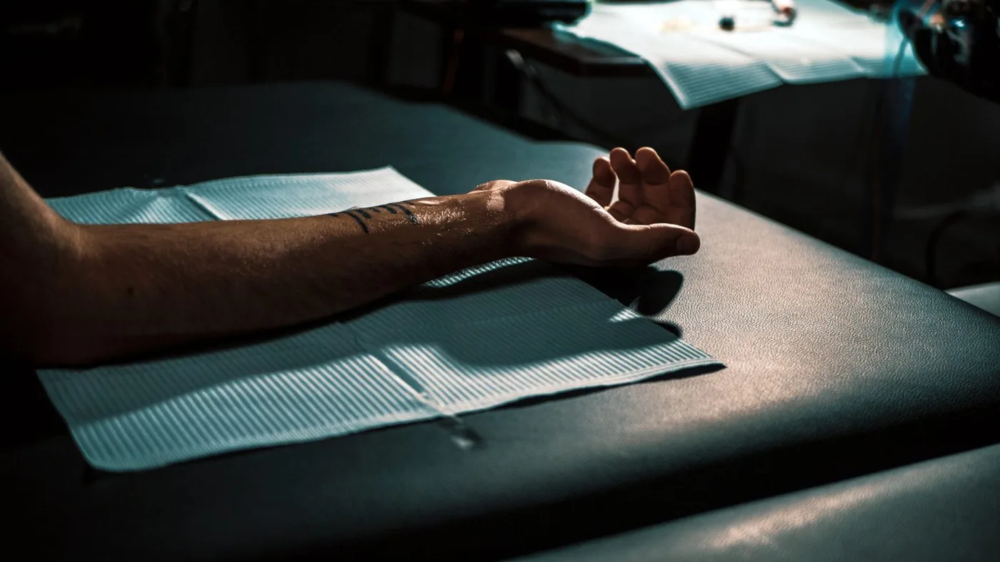
Kom eens binnen.
Een idee bespreek je het best in de shop: dan krijg je meteen juiste info over plaats, grootte en planning. Liever eerst bellen of mailen mag ook.